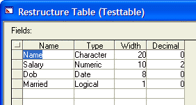

<TBL>.POPULATE_FROM_STRING()
Syntax
<TBL>.POPULATE_FROM_STRING( Record_Format as C, Record_Separator as C, Data as C )
|
Argument |
Description |
|
Record_Format |
A (comma) delimited list of field names. The delimiter must match what is used in the data, which is most often a comma. |
|
Record_Separator |
The character or expression that separates records in the Data field. |
|
Data |
Data to place into the table. |
Description
The <TBL>.POPULATE_FROM_STRING() method populates an existing table from a string variable.
Supported By
Alpha Five Version 6 and Above
Example
|
data = <<%a% tom,23334.56,12/18/52,.t. fred,23412.345,12/10/72,.f. %a% t = table.open("testtable") t.populate_from_string("name,salary,dob,married", crlf(), data) t.close() |
The above example produces a table with character, numeric, date, and logical fields.

See Also
Table Functions and Methods, List Processing Functions